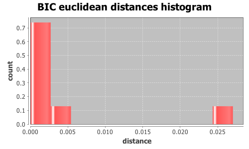

Application Meta
jModeltest 2.1
(c) 2011-onwards D. Darriba, G.L. Taboada, R. Doallo and D. Posada,(1) Department of Biochemistry, Genetics and Immunology
University of Vigo, 36310 Vigo, Spain.
(2) Department of Electronics and Systems
University of A Coruna, 15071 A Coruna, Spain.
e-mail: ddarriba@udc.es, dposada@uvigo.es
Wed Aug 26 14:11:03 EDT 2015
Mac OS X 10.10.5, arch: x86_64, bits: 64, numcores: 4
| Citation: | Darriba D, Taboada GL, Doallo R and Posada D. 2012. "jModelTest 2: more models, new heuristics and parallel computing". Nature Methods 9, 772. |
 Back to top
Back to top Settings
Arguments = -d group3/group3.txt.gene_125.phy -s 3 -i -g 4 -f -BIC -tr 7 -o group3out/g3outgene_125.txtInput Alignment: "group3/group3.txt.gene_125.phy"
NumTaxa = 17
Length = 1,715
Phyml version = 3.0
Phyml binary = PhyML_3.0_macOS_i386
Candidate models = 24
number of substitution schemes = 3
including models with equal/unequal base frequencies (+F)
including models with/without a proportion of invariable sites (+I)
including models with/without rate variation among sites (+G) (nCat = 4)
Optimized free parameters (K) = Substitution parameters + 31 branch lengths + topology
Base tree for likelihood calculations = Maximum Likelihood
Tree topology search operation = NNI
Model Optimization Results
| ID | Name | Partition | -lnL | p | fA | fC | fG | fT | ti/tv | R(a) | R(b) | R(c) | R(d) | R(e) | R(f) | p-inv | shape |
|---|---|---|---|---|---|---|---|---|---|---|---|---|---|---|---|---|---|
| 1 | JC | 000000 | 3343.3895 | 32 | - | - | - | - | - | - | - | - | - | - | - | - | - |
| 2 | JC+I | 000000 | 3332.0904 | 33 | - | - | - | - | - | - | - | - | - | - | - | 0.7470 | - |
| 3 | JC+G | 000000 | 3332.0841 | 33 | - | - | - | - | - | - | - | - | - | - | - | - | 0.0750 |
| 4 | JC+I+G | 000000 | 3331.8925 | 34 | - | - | - | - | - | - | - | - | - | - | - | 0.5390 | 0.7690 |
| 5 | F81 | 000000 | 3309.5370 | 35 | 0.2551 | 0.2033 | 0.2138 | 0.3278 | - | - | - | - | - | - | - | - | - |
| 6 | F81+I | 000000 | 3298.3753 | 36 | 0.2549 | 0.2034 | 0.2139 | 0.3278 | - | - | - | - | - | - | - | 0.7450 | - |
| 7 | F81+G | 000000 | 3298.3633 | 36 | 0.2549 | 0.2034 | 0.2139 | 0.3278 | - | - | - | - | - | - | - | - | 0.0850 |
| 8 | F81+I+G | 000000 | 3298.1569 | 37 | 0.2548 | 0.2035 | 0.2139 | 0.3278 | - | - | - | - | - | - | - | 0.5380 | 0.7840 |
| 9 | K80 | 010010 | 3303.7870 | 33 | - | - | - | - | 2.5327 | - | - | - | - | - | - | - | - |
| 10 | K80+I | 010010 | 3292.2506 | 34 | - | - | - | - | 2.5927 | - | - | - | - | - | - | 0.7520 | - |
| 11 | K80+G | 010010 | 3292.2536 | 34 | - | - | - | - | 2.5917 | - | - | - | - | - | - | - | 0.0620 |
| 12 | K80+I+G | 010010 | 3291.9672 | 35 | - | - | - | - | 2.6028 | - | - | - | - | - | - | 0.5570 | 0.7960 |
| 13 | HKY | 010010 | 3268.5537 | 36 | 0.2563 | 0.2011 | 0.2138 | 0.3287 | 2.5294 | - | - | - | - | - | - | - | - |
| 14 | HKY+I | 010010 | 3257.2527 | 37 | 0.2558 | 0.2012 | 0.2142 | 0.3288 | 2.5884 | - | - | - | - | - | - | 0.7460 | - |
| 15 | HKY+G | 010010 | 3257.2418 | 37 | 0.2559 | 0.2012 | 0.2142 | 0.3288 | 2.5885 | - | - | - | - | - | - | - | 0.0840 |
| 16 | HKY+I+G | 010010 | 3256.9620 | 38 | 0.2558 | 0.2013 | 0.2142 | 0.3288 | 2.5974 | - | - | - | - | - | - | 0.5720 | 0.9190 |
| 17 | SYM | 012345 | 3302.9512 | 37 | - | - | - | - | - | 0.6342 | 3.7371 | 0.7867 | 0.5896 | 4.0251 | 1.0000 | - | - |
| 18 | SYM+I | 012345 | 3291.2118 | 38 | - | - | - | - | - | 0.6164 | 3.7023 | 0.8012 | 0.5356 | 4.0884 | 1.0000 | 0.7560 | - |
| 19 | SYM+G | 012345 | 3291.2249 | 38 | - | - | - | - | - | 0.6169 | 3.7014 | 0.8002 | 0.5379 | 4.0845 | 1.0000 | - | 0.0470 |
| 20 | SYM+I+G | 012345 | 3290.8940 | 39 | - | - | - | - | - | 0.6116 | 3.6916 | 0.7995 | 0.5254 | 4.0858 | 1.0000 | 0.5350 | 0.6750 |
| 21 | GTR | 012345 | 3268.1205 | 40 | 0.2570 | 0.2014 | 0.2133 | 0.3284 | - | 0.7258 | 4.1431 | 0.7066 | 0.7371 | 4.1694 | 1.0000 | - | - |
| 22 | GTR+I | 012345 | 3256.8401 | 41 | 0.2566 | 0.2015 | 0.2138 | 0.3282 | - | 0.7318 | 4.2042 | 0.7153 | 0.7096 | 4.3017 | 1.0000 | 0.7460 | - |
| 23 | GTR+G | 012345 | 3256.8278 | 41 | 0.2566 | 0.2015 | 0.2137 | 0.3282 | - | 0.7316 | 4.2048 | 0.7154 | 0.7095 | 4.2969 | 1.0000 | - | 0.0850 |
| 24 | GTR+I+G | 012345 | 3256.5445 | 42 | 0.2565 | 0.2015 | 0.2138 | 0.3282 | - | 0.7269 | 4.1925 | 0.7130 | 0.7002 | 4.2907 | 1.0000 | 0.5190 | 0.6930 |
There are 3 different topologies. The following table shows the models supporting each topology and the rank according to each Information Criterion, as well as Robinson-Foulds and Euclidean distances with the tree of the best-fit model.
| ID | Models | Topology | AIC | BIC | AICc | DT | |
|---|---|---|---|---|---|---|---|
| 0 |
JC JC+I JC+G F81 F81+I F81+G K80 K80+I K80+G HKY HKY+I HKY+G SYM SYM+I SYM+G GTR GTR+I GTR+G
|
RANK | - | 0 | - | - | |
| Weight | - | 0.9842 | - | - | |||
| RF | - | 0 | - | - | |||
| AVG Distance | - | 9.2767e-04 | - | - | |||
| Distance VAR | - | 4.6022e-07 | - | - | |||
| 1 |
JC+I+G K80+I+G SYM+I+G
|
RANK | - | 1 | - | - | |
| Weight | - | 0.0000 | - | - | |||
| RF | - | 2 | - | - | |||
| AVG Distance | - | 2.6926e-02 | - | - | |||
| Distance VAR | - | 8.0884e-09 | - | - | |||
| 2 |
F81+I+G HKY+I+G GTR+I+G
|
RANK | - | 2 | - | - | |
| Weight | - | 0.0158 | - | - | |||
| RF | - | 2 | - | - | |||
| AVG Distance | - | 4.3351e-03 | - | - | |||
| Distance VAR | - | 8.1313e-11 | - | - |
BIC Selection Results
Model selected
| Model | HKY+G | ||
|---|---|---|---|
| partition | 010010 | ||
| -lnL | 3257.2418 | ||
| K | 37 | ||
| freqA | 0.2559 | R(a) | - |
| freqC | 0.2012 | R(b) | - |
| freqG | 0.2142 | R(c) | - |
| freqT | 0.3288 | R(d) | - |
| ti/tv | 2.5885 | R(e) | - |
| R(f) | - | ||
| p-inv | - | gamma | 0.0840 |
Best model tree
(((((((((I0068:0.00234580,(I0135:0.00175697,I0127:0.00293450):0.00058579):0.00000007,I0119:0.00351993):0.00000007,((I0141:0.00234941,I0067:0.00331766):0.00000014,(I0076:0.00237107,I0075:0.00297472):0.00115689):0.00000004):0.00174962,I0147:0.00484782):0.00237174,(I0158:0.00456738,I0111:0.02359251):0.00020842):0.00175980,I0152:0.00234200):0.00000014,(I0148:0.00534114,I0144:0.00233871):0.00058756):0.00058247,I0151:0.00234313):0.00000004,I0150:0.00175081,I0149:0.00116810);
Display best model tree in PhyloWidget
| Model | -lnL | K | BIC | delta | weight | cumWeight |
|---|---|---|---|---|---|---|
| HKY+G | 3257.2418 | 37 | 6790.0288 | 0.0000 | 0.4947 | 0.4947 |
| HKY+I | 3257.2527 | 37 | 6790.0507 | 0.0219 | 0.4893 | 0.9839 |
| HKY+I+G | 3256.9620 | 38 | 6796.9164 | 6.8876 | 0.0158 | 0.9997 |
| HKY | 3268.5537 | 36 | 6805.2055 | 15.1767 | 0.0003 | 1.0000 |
| GTR+G | 3256.8278 | 41 | 6818.9895 | 28.9608 | 0.0000 | 1.0000 |
| GTR+I | 3256.8401 | 41 | 6819.0140 | 28.9852 | 0.0000 | 1.0000 |
| GTR+I+G | 3256.5445 | 42 | 6825.8701 | 35.8413 | 0.0000 | 1.0000 |
| GTR | 3268.1205 | 40 | 6834.1278 | 44.0990 | 0.0000 | 1.0000 |
| K80+I | 3292.2506 | 34 | 6837.7050 | 47.6762 | 0.0000 | 1.0000 |
| K80+G | 3292.2536 | 34 | 6837.7110 | 47.6822 | 0.0000 | 1.0000 |
| K80+I+G | 3291.9672 | 35 | 6844.5853 | 54.5565 | 0.0000 | 1.0000 |
| K80 | 3303.7870 | 33 | 6853.3305 | 63.3017 | 0.0000 | 1.0000 |
| F81+G | 3298.3633 | 36 | 6864.8246 | 74.7959 | 0.0000 | 1.0000 |
| F81+I | 3298.3753 | 36 | 6864.8487 | 74.8200 | 0.0000 | 1.0000 |
| SYM+I | 3291.2118 | 38 | 6865.4161 | 75.3873 | 0.0000 | 1.0000 |
| SYM+G | 3291.2249 | 38 | 6865.4422 | 75.4134 | 0.0000 | 1.0000 |
| F81+I+G | 3298.1569 | 37 | 6871.8590 | 81.8302 | 0.0000 | 1.0000 |
| SYM+I+G | 3290.8940 | 39 | 6872.2276 | 82.1989 | 0.0000 | 1.0000 |
| F81 | 3309.5370 | 35 | 6879.7250 | 89.6962 | 0.0000 | 1.0000 |
| SYM | 3302.9512 | 37 | 6881.4476 | 91.4189 | 0.0000 | 1.0000 |
| JC+G | 3332.0841 | 33 | 6909.9248 | 119.8960 | 0.0000 | 1.0000 |
| JC+I | 3332.0904 | 33 | 6909.9374 | 119.9086 | 0.0000 | 1.0000 |
| JC+I+G | 3331.8925 | 34 | 6916.9888 | 126.9600 | 0.0000 | 1.0000 |
| JC | 3343.3895 | 32 | 6925.0883 | 135.0595 | 0.0000 | 1.0000 |
| -lnL: | negative log likelihod |
| K: | number of estimated parameters |
| BIC: | Bayesian Information Criterion |
| delta: | BIC difference |
| weight: | BIC weight |
| cumWeight: | cumulative BIC weight |
Confidence interval
There are 24 models in the 100.00% confidence interval:
HKY+G HKY+I HKY+I+G HKY GTR+G GTR+I GTR+I+G GTR K80+I K80+G K80+I+G K80 F81+G F81+I SYM+I SYM+G F81+I+G SYM+I+G F81 SYM JC+G JC+I JC+I+G JC

Euclidean distances histogram from each model optimized tree to HKY+G tree.
Euclidean distances histogram from each model optimized tree to HKY+G tree.